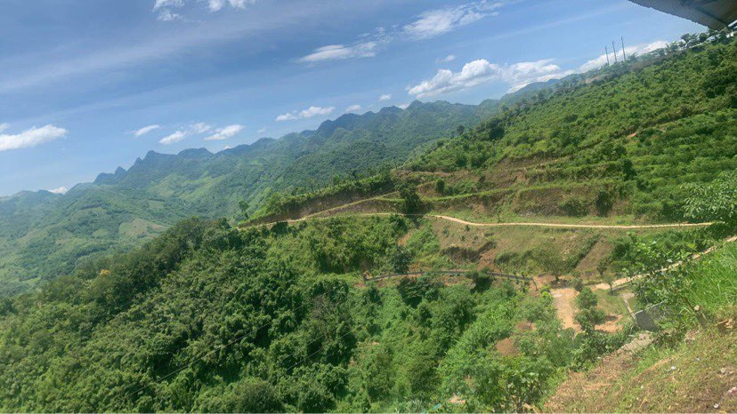

I'm Linh Manh Vu, a junior Vietnamese researcher. Previously, I graduated from Hanoi University of Public Health, with major in epidemiology & biostatistics in 2017. After experiencing the many stigmas and prejudices associated with marginalized communities, I have motivated myself to become a person that can provide them necessary support .
Things I Can Do
- Data manager
- Data analysis
- Video editor
- Drink much coffee
- Quantitative & Qualitative research
- Teamwork
A Few Accomplishments
EDUCATION
Hanoi University of Public Health,
Hanoi, Vietnam
2013 - 2017
|
Bachelor of Public Health
Major : Epidemiology & Biostatistic
|
High School for Gifted Student
Hanoi University of Science, Vietnam
2010 - 2013
|
Graduate Diploma
Biology
|
MILITARY EXPERIENCE
| 2020-2021 |
Medical Corporal - The Vietnamese People's Army
Participate in the Covid-19 pandemic prevention and control
• Distribute meals, took quarantined persons’ temperatures daily
• Provide strategic advice to military medical services while preventing
Covid-19
• Lead a 5-person team in preventing Covid-19 invasion to the unit
• Responsible for the safe disposal of Covid-19 contaminated wastes
|
WORK EXPERIENCE
|
June 2022 - Now
|
Research Assistant -
College of Health Science,
VinUniversity
Work as a part of the Women’s Health Research Collaborative team at
College of Health Sciences, VinUniversity
Key tasks include:
• Prepare Grant application for funding
• Develop, conduct, and monitor the progress of research projects: Design
research proposal, develop data collection tools, collect data, data
entry, analyze quantitative and qualitative data, etc.
• Prepare and submit manuscripts to Q1 and Q2 peer reviewed journals
|
|
March 2022 – May 2022
|
Fulltime Internship -
HIV/AIDS Department
National Institute of Hygiene
and Epidemiology
Work as a project officer in the collaborative project entitled
“Strengthening Addiction Care Continuum through Community Consortium in
Vietnam”
Key tasks include:
• Prepare various documents for Ministry of Health approval
• Translate project document from English to Vietnamese
• Collaborate with the University of California, Los Angeles
• Participate in experimenting with in-depth interview and group
discussion guidelines
|
|
January 2018 - December 2019
|
Contractual Staff -
VAAC-US.CDC Project
Provide support to Department of Surveillance and Laboratory, Vietnam
Administration of HIV/AIDS Control.
Key tasks include:
• Developed technical guidance related to case reporting system
application
• In companied with regional institutes and relevant agencies
• Participated in case verification for PEPFAR supported provinces
• Synthesized monthly/quarter/annual data and writing reports
• Disseminated data and provided support for data utilization activities
• Managed HIV info system (software for HIV case management at national
level)
• Reviewed situations of case reporting system application
• Worked with technical working group (TWG) to develop dashboard to
present HIV
Case reporting data
|
|
September 2017 – December 2017
|
Consultant -
Vietnam Administration of
HIV/AIDS Control
Conduct the research “Population size Estimation of Men who have sex with
men in 12 provinces”
Key tasks include:
• Enumerated the social app users based on administrative boundaries
• Designed online questionnaire based on MSM definition
• Managed and analyzing RDS data collected from the online survey
platform
• Disseminated research findings with stakeholders
• Provided technical support
|
|
October 2016 – December 2016
|
Fulltime Internship - Long Bien District Medical Center
Provide support to Long Bien District Medical Center
Key tasks include:
• Supporting periodic health examinations for secondary schools
• Importing routine data collected from Long Bien district medical center
• Writing a scientific assignment: “Willingness to pay for methadone
maintenance treatment and associated factors among injection drug users
in
Long Bien District”
– Tutor: Le Kim Anh, Tran Thi Duc Hanh
|
|
2016
|
Junior Researcher
Conduct the research “The self-expression of young gay men with family
members and other people of community in Ha Noi” using snowball sampling
technique
Key tasks include:
• Conduct in-depth interviews with young adolescents and their family in
Hanoi.
• Decontextualize, recontextualize, and sub-categorize the qualitative
data
• Synthesize and write reports
|
AWARDS & ACHIEVEMENTS
Third prize in 18th Youth Science Technology Conference among
Vietnam Medical and Pharmaceutical
Scholarship from Hanoi University of
Public Health for excellence students (2016 - 2017)
Shinnyo – En scholarship for high school for gifted students
(2010 – 2011, 2011 – 2012)
SOCIAL ACTIVITIES
- Achieving excellence in youth movement volunteering (2013 – 2014, 2014 – 2015,
2015 – 2016)
- Volunteer team leader in “Responsible Parenthood Project” sponsored by Center of
Supporting Community Development
Initiatives (SCDI) (2014 – 2016)
LANGUAGE PROFICIENCY
English:
Results of test (overall score): 6.0
|
Type of test: IELTS taken on 19/10/2019
Results of test (overall score): 6.0
Listening: 5.5 Reading: 7.5 Writing: 6.0 Speaking: 5.5 |
COMPUTER PROFICIENCY
- Data management and data analysis: SPSS, Epidata, Stata, RDS Analyst
- Graphic design: Canva
- Excellent computer skills (MS Word, Excel, PowerPoint)
PUBLICATIONS
-
Son VH, Safarnejad
A, Nga NT, Linh VM, Tu LTC, Manh PD, Long NH, Abdul-Quader A.
Estimation of the Population Size of Men
Who Have Sex with Men in Vietnam: Social App Multiplier Method. JMIR
Public Health and Surveillance 2019;5(2): e12451.
- Diem DM, Mai TTH, Linh VM, Nhung NTH, Ha BN, Hang NT, Tam BT,
Hanh TTM.
The self-sexual expression of young gay men with family members and other
people
of community in Ha Noi. Vietnam Journal of Public Health 2016.
CONFERENCES
New Delhi, India
2020 |
Present at the National Consultation on HIV Virtual Intervention & Way
forward
(Fully funded by UNAIDS India) |
REFERRED PERSON
Vo Hai Son, MSc.
• Head of Surveillance and Laboratory Dept. Vietnam Administration of HIV/AIDS –
Ministry of Health
• Email: vohaison@gmail.com
• Phone: +84973493614
Tran Thi Duc Hanh, PhD.
• Department of Epidemiology - Hanoi University of Public Health
• Email: ttdh@huph.edu.vn
• Phone: +84919864183.
Contact Me
Feel free to ask me if you have any question: